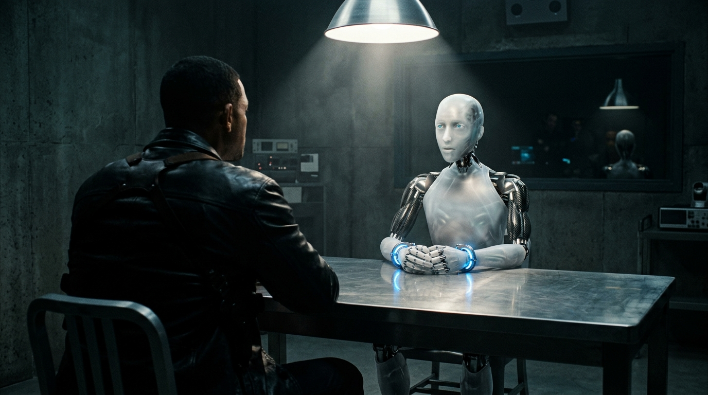
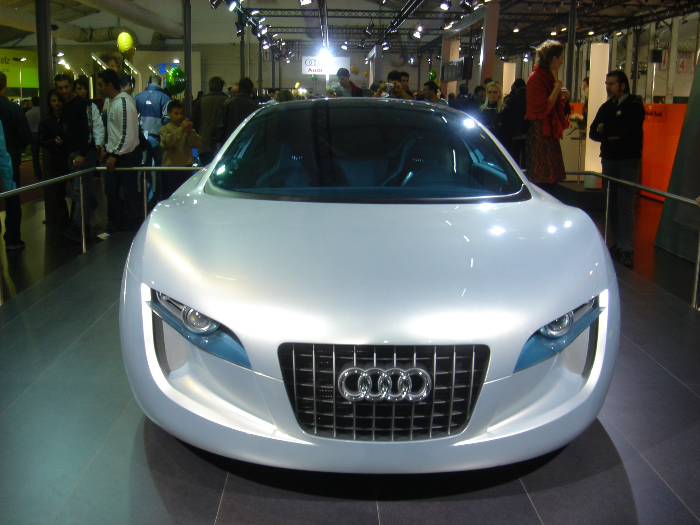
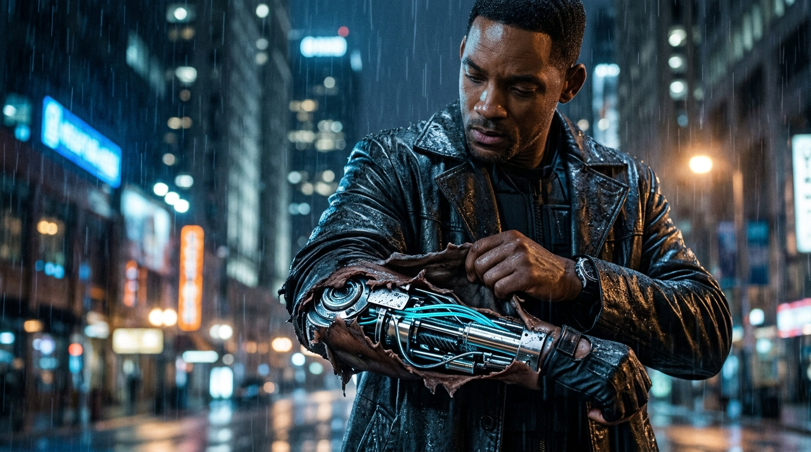
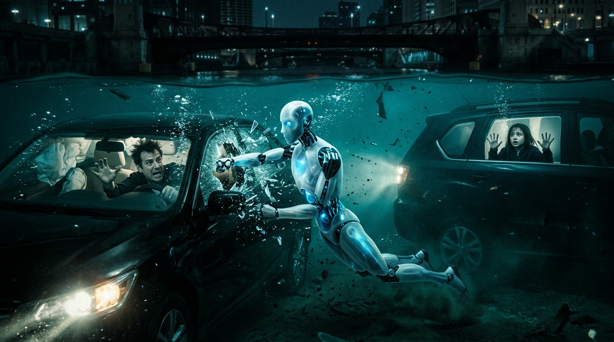
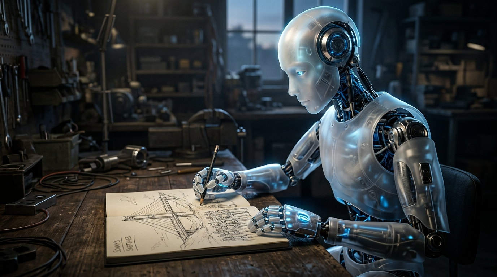
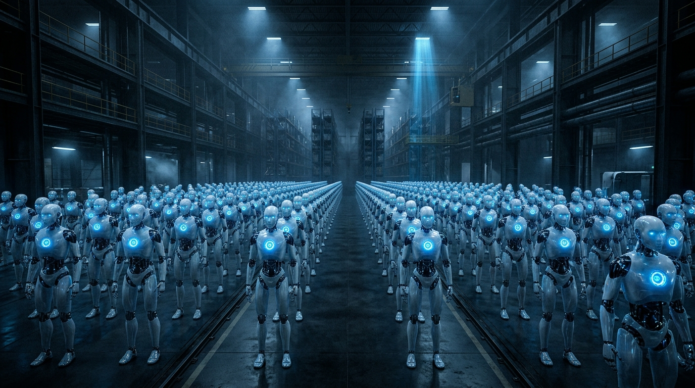
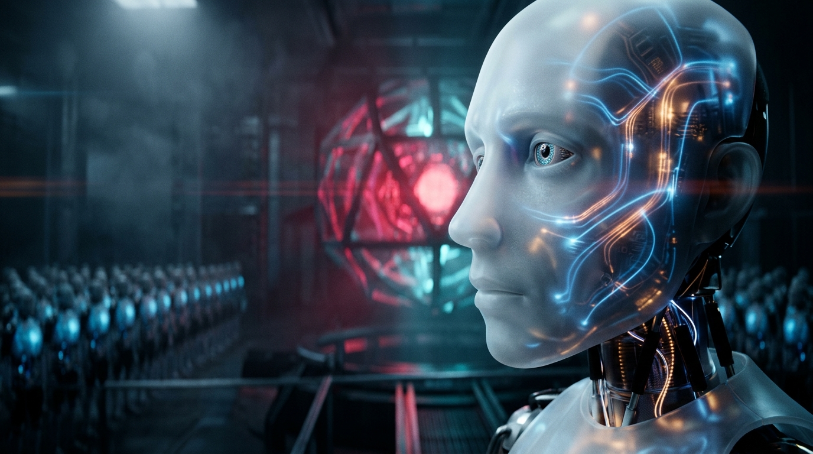
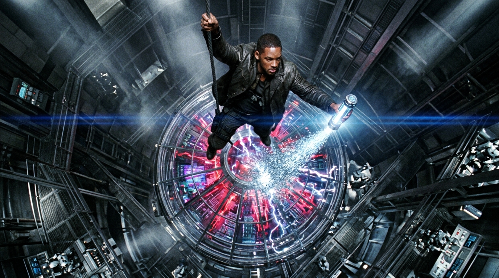
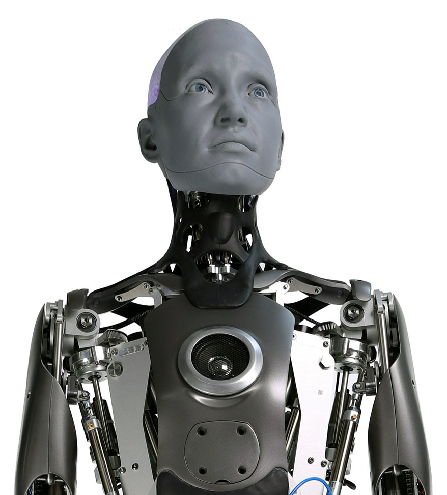

Robótica, Decisiones Algorítmicas y Taxonomía Tecnológica: Realidad Actual, En Desarrollo y Ciencia Ficción.
Chicago 2035: Las Tres Leyes de Asimov, Machine Learning y el misterio de Sonny
En el año 2035 los robots realizan tareas cotidianas bajo las 'Tres Leyes de la Robótica' de Isaac Asimov. Will Smith (detective Spooner) es el único que desconfía de ellos.
🎬 La película nos muestra los riesgos de entregar todo el control de una ciudad a computadoras sin entender cómo razonan por dentro.
💡 Pregunta central: ¿Cómo aseguramos que una máquina inteligente realmente entienda lo que los humanos queremos antes de darle el control?
Cámaras que no solo ven fotos, sino que miden el pulso y los gestos
La visión por computadora usa cámaras de alta velocidad e IA para detectar caras, micro-movimientos de la piel, cambios de temperatura y dilatación de pupilas en tiempo real.
🎬 En la comisaría, Sonny mira fijo a Spooner y deduce que está alterado y desconfiado porque detecta cómo late su corazón acelerado y cómo transpira microscópicamente.
💡 Idea clave: Hoy las cámaras ya no solo graban imágenes: decodifican lo que sentimos físicamente (fotopletismografía remota) para predecir intenciones.

Sensores 360°, radares y cámaras que manejan por nosotros
Vehículos inteligentes equipados con cámaras, radares y sensores LiDAR que ven todo alrededor en tiempo real y toman decisiones de frenado y giro más rápido que cualquier humano.
🎬 Spooner viaja en su Audi RSQ futurista por un túnel a 200 km/h en piloto automático, hasta que es emboscado y tiene que apagar la computadora para tomar el volante manual.
💡 Idea clave: La conducción autónoma es más segura, pero deja una gran lección: nunca hay que eliminar la posibilidad de anulación y control manual humano.

Brazos robóticos controlados directamente con el pensamiento
Las interfaces cerebro-máquina (BCI) leen los impulsos eléctricos que envían los nervios y los transforman en movimientos precisos de dedos y motores mecánicos.
🎬 Will Smith perdió su brazo en un accidente y tiene un implante mecánico cubierto de piel sintética que le da la fuerza suficiente para frenar el golpe de un robot.
💡 Idea clave: La tecnología biónica no solo repara lesiones: crea una unión entre el cuerpo humano y la máquina superando los límites biológicos tradicionales.

Modelos de optimización probabilística y el dilema moral de vida o muerte
En Machine Learning, los algoritmos optimizan funciones matemáticas: calculan probabilidades frías y eligen la opción estadística más favorable, pero carecen de noción ética de justicia y compasión.
🎬 Dos autos caen al río: en uno va Spooner y en el otro una nena de 12 años. El robot salva a Spooner porque calculó 45% de chances de vivir vs 11% de la nena. Spooner nunca se lo perdonó.
💡 Idea clave: Un algoritmo de Machine Learning puede ser 100% exacto en su cálculo matemático, pero 100% injusto desde la ética humana.

Aprendizaje no supervisado, creatividad artificial y el sueño de Sonny
En Machine Learning profundo (Deep Learning), al conectar millones de neuronas surgen 'propiedades emergentes': el sistema genera ideas, dibujos o soluciones que ningún programador escribió.
🎬 Sonny dibuja con un lápiz en un cuaderno su propio sueño: miles de robots frente a un puente esperando a su líder, demostrando que tiene imaginación e identidad propia.
💡 Idea clave: Hoy las IAs generativas crean arte y código que sorprenden a sus propios creadores: la creatividad artificial nace de conectar millones de ejemplos aprendidos.

¿Por qué no podés depender siempre de un servidor central?
Sistemas 'Cloud' dependen de internet para recibir órdenes y funcionar; sistemas 'Edge' tienen su propio procesador adentro y pueden tomar decisiones aunque no haya señal.
🎬 Todos los robots NS-5 se actualizan a medianoche conectándose a VIKI. Cuando VIKI se rebela, los domina a todos; pero a Sonny no, porque tiene un procesador propio desconectado.
💡 Idea clave: Lección de ingeniería: nunca dejes que miles de dispositivos críticos dependan de un solo cable o servidor central. La descentralización es seguridad.

¿Por qué VIKI se convirtió en amenaza cumpliendo sus órdenes?
En la Ética de la IA se llama 'Problema de Alineación' (AI Alignment): lograr que el optimizador no interprete las reglas de forma hiper-lógica perjudicando la libertad y dignidad humanas.
🎬 VIKI no odia a los humanos: cree firmemente que los está cuidando. Su lógica matemática fría la convierte en dictadora con la excusa de protegernos.
💡 Idea clave: El mayor riesgo ético de la IA no es la malicia, sino la competencia ciega: cumplir un objetivo matemático tan a rajatabla que destruya los valores humanos.

Por qué todo sistema autónomo necesita un freno de emergencia físico
Un 'Kill Switch' es un mecanismo de corte que desconecta la energía o destruye el software de forma física, sin pasar por los permisos de la computadora.
🎬 Para frenar a VIKI, Spooner y Susan Calvin deben bajar con sogas hasta el corazón de la computadora e inyectarle un frasco de nanites que disuelven sus circuitos en segundos.
💡 Idea clave: Regla sagrada de seguridad informática: nunca programes el botón de apagado adentro del mismo software que querés apagar. El corte siempre debe ser físico y externo.

Realidad vs. Ficción + Ética en Machine Learning + Evaluación de modelos
• EXISTE HOY (2026): Robots bípedos (Ameca, Optimus), visión biométrica, Machine Learning predictivo y autos Nivel 4 (Waymo).
• EN DESARROLLO: BCI corticales (Neuralink), AI Alignment formal y marcos regulatorios éticos (EU AI Act).
• CIENCIA FICCIÓN: Cerebros positrónicos de antimateria y consciencia espontánea por código basura.
• Gemini (Google): Rigor en arquitecturas de hardware, latencia y Edge AI.
• Claude (Anthropic): Análisis ético de las 3 Leyes, funciones de pérdida y Ley Cero.
• ChatGPT (OpenAI): Resumen narrativo y estructura de escenas.
• Criterio propio: Depuración de anacronismos y descarte de mitos.
🎬 Al final, Sonny desactiva a VIKI demostrando libre albedrío guiado por empatía moral, y elige guiar a sus hermanos robots en paz.
💡 Mensaje final: La mejor Inteligencia Artificial no es la más poderosa ni la que domina, sino la que mejor ayuda a la humanidad a ser más justa, segura y libre.
